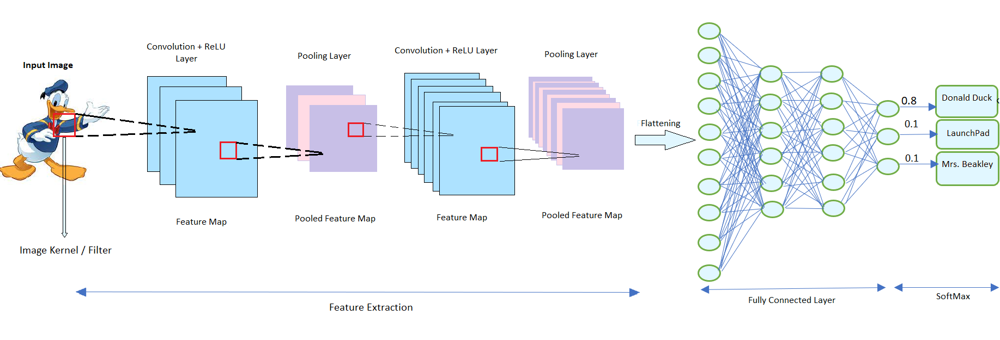
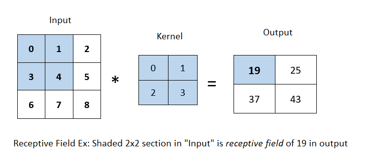
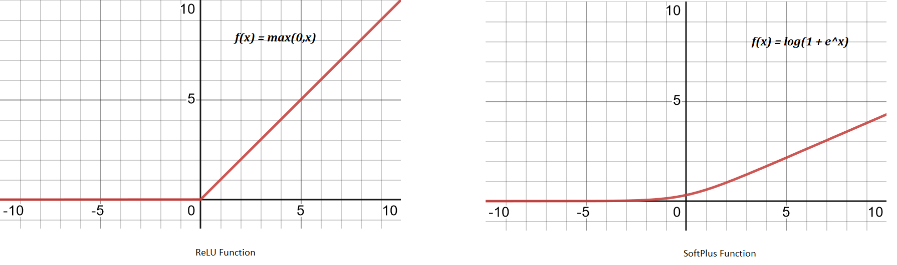
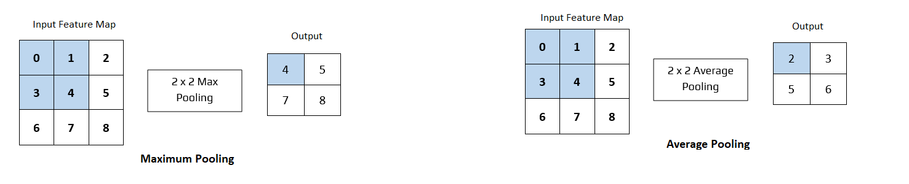

First of all, Convolutional Neural Networks (CNNs) are analogous to Artificial Neural Networks (ANNs) where we load the input in the form of multidimensional vector to the input layer, and the pass it to `n` number of hidden layers where by weighing up stochastic changes, decision gets made on the final output.
CNNS, however, are preferred over ANNs for image-based tasks for providing two distinct advantages to do so, i.e., reduce computational complexity and overfitting.
ANNs, for instance, to process `64×64` colored image would require `12,288` weights on a single neuron in first layers, and afterwards network needs to be lot larger to process further, whereas with CNN architecture weights can be 108 with receptive field of `6×6`. Therefore, CNN can be extremely helpful with reducing computation complexity. Second factor is overfitting – even if you have unlimited computational capacity and time, ANN can easily overfit. Having less parameters to train from is one of the perfect solutions to overcome the problem of overfitting, and CNNs tone down parameters to much smaller number than ANNs.
CNN takes input of image as a tensor of order 3, and then pass it forward to different layers in CNN architecture i.e., convolutional layer, pooling layer, fully connected layer, ReLU layer, and loss layer. The loss layer, however, is not needed in the prediction task, and used only when we are trying to learn CNN parameters from training examples. General structure of CNN architecture can be seen below in Fig 1. and will be discussed ahead.

Fig 1: A general structure of CNN architecture
The key thing with CNN is that we do not have pre-defined weights for the model here, each layer gets to learn their weights by processing data from the previous layer. Also, each layer process data only for its receptive field.
Receptive Field : The restricted area of the previous layer from which a neuron recieves input, due to the principle of locality, is called receptive field. Generally, it is `3×3` neurons or `5×5` neurons, but in the case of fully-connected layer, the receptive field is the entire previous layer.
In the image below, given the kernel size of `2×2`, the receptive field of the shaded output element ie. 19 is the four elements in the shaded portion of the input.

Fig 2: Receptive Field
Before digging deeper into layers, lets first understand the principles that helps maintain spatial invariance in the earlier layers of CNNs i.e., translation invariance and locality
Translation Invariance : Certain section of image or patch of pixel should doesn't depends on where it is located in representation, and our network should respond similarly to the same patch, regardless of where it appears in the image.
Locality : This principle suggests that the earliest layers of the network should focus on local regions to gain information on how it would be in representation without having to look at content of the image in distant regions.
Lets say, we have two-dimensional image `X` as input and `H` as hidden representation in our network, where `[X]_(i,j)` and `[H]_(i,j)` denote the pixel at location `(i,j)` in the input image and hidden representation, respectively. Here, to have each unit of hidden layer recieve input we need our weight as fourth order tensor `W`, and so with `U` as bias, our network can be written as:
`[H]_(i,j) = [U]_(i,j) + \sum_{k}\sum_{l}[W]_(i,j,k,l) [X]_(k,l)`
`=[U]_(i,j) + \sum_{a}\sum_{b}[V]_(i,j,a,b)[X]_(i+a,j+b)` ...(1)
Here, we switch from `W` to `V` as there is a one-to-one correspondence between coefficients in both fourth-order tensors. Also, we re-index `(k,l)` such that `k=i+a` and `l=j+b` where indices `a` and `b` run over both positive and negative offsets, covering the entire image. This assigns `[V]_(i,j,a,b) = [W]_(i,j,i+a,j+b)`. Thus, we can say for any given location `(i,j)` in the hidden representation `[H]_(i,j)`, we compute its value by summing over pixels in `X`, centered around `(i,j)` and weighted by `[V]_(i,j,a,b)`
Now, as we know from the first principle of translation invariance that any shift in the input `X` should simply lead to a shift in the hidden representation `H`. This is only possible if `V` and `U` do not actually depend on `(i,j)` i.e., we have `[V]_(i,j,a,b) = [V]_(a_b)` and `U` is a constant, say `u`. Then using eq(1) we can re-write `H` as :
`[H]_(i,j) = u + \sum_{a}\sum_{b}[V]_(a,b)[X]_(i+a,j+b)` ...(2)
This is Convolution. We are effectively weighting pixels at `(i+a,j+b)` in the vicinity of location `(i,j)` with coefficients `[V]_(a,b)` to obtain the value of `[H]_(i,j)`. Also, `[V]_(a,b)` needs fewer coefficients than `[V]_(i,j,a,b)` as it no longer depends on the location within the image.
Now, lets look at the principle of locality. Here, it means that we do not need to look far away from location `(i,j)` in order to gain information while computing values for `[H]_(i,j)`. This means that outside some range i.e., `|a| >Δ` or `|b|>Δ`, we should set `[V]_(a,b) = 0`. Then using eq(2), we can re-write `[H]_(i,j)` as:
`[H]_(i,j) = u + \sum_{a=-Δ}^Δ\sum_{b=-Δ}^Δ[V]_(a,b)[X]_(i+a,j+b)` ...(3)
This eq(3) is in nutshell convolutional layer, and `[V]` is convolutional kernel or filter. This helps reduce parameters drastically without altering the dimensionality of input or representation. Thus the name - Convolutional Neural Network.
However, all images are of three channels (RGB) consisting of height, width and depth. This makes input image of third-order tensor where the first two concern spatial relationships and third assigns multidimensional representation to each pixel location. For eq(3), now convolutional kernel/filter `[V]_(a,b)` will be `[V]_(a,b,c)` and eq(3) can be re-written as:
`[H]_(i,j,d) = \sum_{a-Δ}^Δ\sum_{b=-Δ}^Δ\sum_{c}[V]_(a,b,c,d)[X]_(i+a,j+b,c)`
where `c` and `d` indexes input and output depth of image and representation. In essence, this is the definition of convolutional layer.
In convolutional layer afterwards, when image kernel or filter convolves across the spatial dimensionality of the input image, we get a 2D vector called feature map or activation map calculated through scalar product. Size of the feature map can be assessed as:
`(n_(h) -k_(h) + 1) × (n_(w) - k_(w) + 1)`
where `n_(h)` and `n_(w)` are height and width of input size, and `k_(h)` and `k_(w)` are height and width of image kernel. Also, as kernel spread along the entirety of the depth of the input, we get a stack of feature maps for each depth dimension called pooled feature maps.
Two other keys things in convolutional layer are stride and zero-padding.
Stride is movement of kernel over input image. If the stride is 1, the receptive field of kernel moves by one column to the right; if 2, then receptive field moves by two columns to the right. Lower value of stride creates heavily overlapped receptive field and extensively large feature map. On the other hand, larger value of stride would have sparsely overlapped receptive field and smaller feature maps.
Padding (or Zero-Padding)
Kernel definitely reduce the parameters to a considerably smaller size, but it can obliterate any important information on the boudaries of input image. Padding is a technique to save those information by just populating edges of the original image by a number, usually 0, and rarely by 1. This padding technique by 0 is called zero-padding.
Now, the size of convolutional layer output can be calculated by:
where `X` is the input size (height×widht×depth), `R` is receptive field size, `Z` is the amount of padding set, and `S` is stride. Also, if the output of above eq is not a whole number, then the stride has been incorrectly set, and needs to be changed.
Rectified Linear Unit or ReLU are in essense not a separate layer, but a component added with the convolutional layer after creating feature map and before passing it to the pooling layer. ReLU layer does not change the size of the output, which means both input and output from ReLU are of same size.
Also, since original information in any input image is always highly nonlinear mapping of pixels, which gets distorted slightly by the convolutional layer. We would want this non-linearity to be increased again. ReLU layer is applied to do that. ReLU function, `f(x) = max(0,x)` effectively removes negative values from an activation map by setting them to zero.
Other activation function such as tanH or sigmoid can also be used and used to be used before the inception of AlexNet, however, after AlexNet implementation of ReLU, as it trains much faster, it has become new norm. Moreover, softplus function `f(x) = log(1 + e^x)` is sometimes used especially in the case of backprop while finding parameters. SoftPlus also trains much slower than ReLU
Pooling layers aim to further reduce dimensionality of the representation received from convolutional layer while maintaining the depth to its standard size. Pooling layer also solve the sensitivity problem derived from convolutional layer.
For instance, if we take the image `X` with a sharp delineation between black and white and shift the whole image by one pixel to the right, i.e., `Z[i, j] = X[i, j + 1]`, then the output for the new image Z might be vastly different just by the shift of 1 pixel on edge.
In pooling layers, there is no kernel, but a pooling window slides over feature map received from convolutional layer in a similar fashion according to its stride. A pooling layer with a pooling window shape of `p × q` is called a `p × q` pooling layer.
Operations with pooling layer can be of a few type ie., maximum pooling or average pooling or general pooling. Maximum (or max) pooling is the most common, and it returns the maximum value of the elements of pooling window. Similarly, average pooling returns the average of all values of the elements of pooling window as shown in the shaded section of Fig 3. General Pooling that uses `L1`/`L2` normalization are quite rare.
Pooling layer, thus get to reduce dimensionality, and coming back to example of sensitivity in convolutional layer Suppose, we set the convolutional layer input as X and the pooling layer output as Y with `2 ×2` max pooling. This way whether or not the values of `X[i, j]` and `X[i, j + 1]` are different, or `X[i, j + 1]` and `X[i, j + 2]` are different, the pooling layer always outputs `Y[i, j] = 1`
This is the last layer in CNN where we get to make prediction. Fully-Connected layer is similar to traditional neural network (ANN), however, before passing information into it, we need to flatten our multi-dimensional vector into 1D vector with flattening process.
Afterwards, information gets passed into this fully-connected layer where we can have any number of hidden layers before and each node is connected to the each node of both the previous and next layer. In the end, we make our classification using binary cross-entropy or soft-max depending on the case if binary or multi-class classification.
One drawback here is - it can get computationally complex as it includes lots of parameters. But, with dropout we can effectively solve this challenge.
References:
[1] O'Shea, K. and Nash, R., 2015. An introduction to convolutional neural networks. arXiv preprint arXiv:1511.08458.